| Cumulative threshold | Cloglog threshold | Description | Fractional predicted area | Training omission rate | Test omission rate | P-value |
|---|
| 1.000 | 0.022 | Fixed cumulative value 1 | 0.445 | 0.000 | 0.000 | 4.739E-7 |
| 5.000 | 0.109 | Fixed cumulative value 5 | 0.298 | 0.019 | 0.000 | 3.412E-10 |
| 10.000 | 0.191 | Fixed cumulative value 10 | 0.229 | 0.037 | 0.056 | 1.856E-10 |
| 1.953 | 0.047 | Minimum training presence | 0.382 | 0.000 | 0.000 | 3.048E-8 |
| 23.910 | 0.364 | 10 percentile training presence | 0.131 | 0.093 | 0.278 | 1.458E-8 |
| 27.043 | 0.404 | Equal training sensitivity and specificity | 0.116 | 0.111 | 0.278 | 3.475E-9 |
| 21.952 | 0.342 | Maximum training sensitivity plus specificity | 0.141 | 0.037 | 0.222 | 2.066E-9 |
| 17.204 | 0.280 | Equal test sensitivity and specificity | 0.169 | 0.037 | 0.167 | 1.252E-9 |
| 6.418 | 0.135 | Maximum test sensitivity plus specificity | 0.274 | 0.037 | 0.000 | 7.489E-11 |
| 1.953 | 0.047 | Balance training omission, predicted area and threshold value | 0.382 | 0.000 | 0.000 | 3.048E-8 |
| 10.780 | 0.201 | Equate entropy of thresholded and original distributions | 0.221 | 0.037 | 0.111 | 3.153E-9 |


 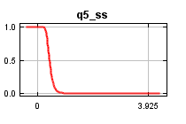
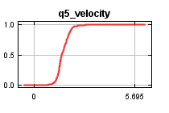
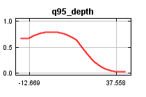
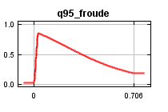
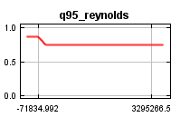
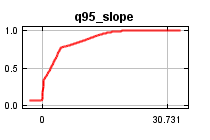
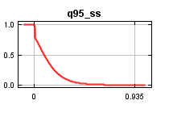
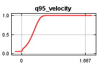
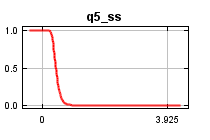
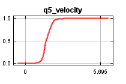
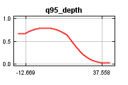
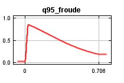
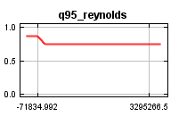
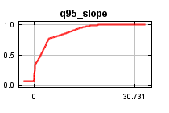
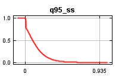
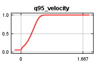